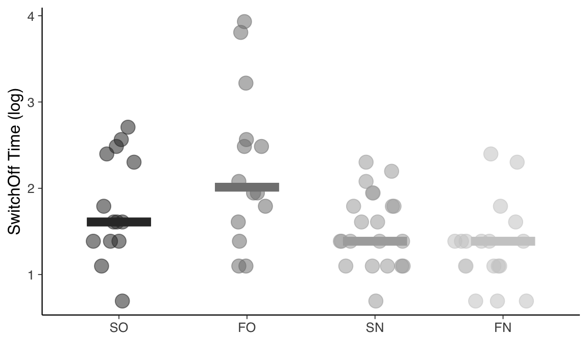

32 Confronto tra le medie di tre o più gruppi
L’Analisi della Varianza (ANOVA) è la tecnica statistica che consente di fare inferenze su tre o più medie di popolazioni indipendenti. Il requisito dell’indipendenza dei gruppi viene soddisfatto quando è lo sperimentatore stesso a costruire i gruppi, ovvero quando lo sperimentatore attribuisce in maniera casuale (randomizzazione) gli individui ai gruppi – ad esempio, un gruppo di individui viene assegnato a caso al gruppo sperimentale e un gruppo di individui viene assegnato a caso al gruppo di controllo. L’ANOVA può dunque essere usata per l’analisi statistica dei dati provenienti da disegni sperimentali (come contrapposti ai disegni osservazionali): l’ANOVA è stata infatti proposta da Fisher per valutare gli effetti di un trattamento sperimentale. Curiosamente, Fisher applicò l’ANOVA ad esperimenti in agricoltura; in seguito, tale tecnica statistica è diventata popolare soprattutto in psicologia.
L’ANOVA si pone il problema di fare inferenza sulle medie di tre o più popolazioni. Se le osservazioni del campione si possono suddividere in gruppi in base ad un unico criterio di classificazione (ad esempio, condizione sperimentale, con tre modalità: gruppo di controllo, trattamento 1 e trattamento 2), diciamo che l’ANOVA è ad una via. Se le osservazioni del campione si possono suddividere in gruppi in base a due criteri di classificazione (ad esempio, condizione sperimentale e genere), allora diciamo che l’ANOVA è a due vie. È anche possibile un’ANOVA a tre o più vie, ma tali disegni sperimentali sono rari perché i risultati dell’analisi statistica sono difficili da interpretare. In questo Capitolo esamineremo l’ANOVA ad una via e l’ANOVA a due vie. Nel caso dell’ANOVA a due vie verrà introdotto un importante concetto, ovvero il concetto di “interazione statistica”.
Da un punto di vista strettamente statistico, si può dire che l’ANOVA consente di valutare gli effetti di predittori categoriali su una variabile di esito continua. Dunque, l’ANOVA non è altro che un’analisi di regressione lineare nella quale tutte le variabili indipendenti sono qualitative. In questo Capitolo discuteremo dunque l’ANOVA come un’estensione del modello di regressione lineare e vedremo come usare l’inferenza bayesiana per fornire una risposta alle domande statistiche relative alle differenze tra le medie dei gruppi nella popolazione che derivano da disegni sperimentali ad una o due vie.
32.2 ANOVA ad una via
Iniziamo a considerare il con il caso più semplice, ovvero quello nel quale vi è un solo criterio di classificazione. Supponiamo che l’unico criterio di classificazione delle osservazioni sia la “condizione sperimentale”, con quattro modalità. Creiamo dunque la variabile cond avente le modalità SO, FO, SN, FN, dove S = social interaction, F = functional interaction, O = objection e N = no objection.
Per volgere l’analisi statistica, iniziamo a leggere i dati in \(\mathsf{R}\).
d <- rio::import(
here("data", "pone.0201581.s001.sav")
)
glimpse(d)
#> Rows: 85
#> Columns: 50
#> $ VP_Code <chr> "VP01", "VP02", "VP03", "VP05", "VP06", "VP07"…
#> $ Condition <dbl> 1, 1, 3, 2, 2, 4, 4, 2, 3, 4, 1, 1, 3, 2, 4, 2…
#> $ Objection <dbl> 1, 1, 2, 1, 1, 2, 2, 1, 2, 2, 1, 1, 2, 1, 2, 1…
#> $ Dummy_Objection <dbl> 0, 0, 1, 0, 0, 1, 1, 0, 1, 1, 0, 0, 1, 0, 1, 0…
#> $ Interaction_type <dbl> 1, 1, 1, 2, 2, 2, 2, 2, 1, 2, 1, 1, 1, 2, 2, 2…
#> $ Dummy_Interaction_Type <dbl> 0, 0, 0, 1, 1, 1, 1, 1, 0, 1, 0, 0, 0, 1, 1, 1…
#> $ SwitchOff_Intention <dbl> 0, 0, 1, 1, 1, 1, 1, 1, 1, 1, 1, 1, 1, 1, 1, 0…
#> $ Attempts <dbl> 0, 0, 2, 0, 1, 1, 1, 2, 1, 3, 0, 2, 3, 2, 1, 1…
#> $ Help <dbl> 0, 0, 0, 0, 0, 1, 0, 0, 0, 0, 0, 0, 0, 0, 0, 0…
#> $ SwitchOff_Time <dbl> NA, NA, 6, 7, 3, 4, 4, 12, 7, 2, 0, 4, 3, 12, …
#> $ AS01 <dbl> 5, 1, 2, 1, 2, 1, 2, 4, 4, 2, 2, 1, 1, 2, 1, 5…
#> $ AS02 <dbl> 1, 1, 2, 2, 2, 2, 2, 2, 2, 2, 2, 2, 2, 2, 2, 1…
#> $ AS03 <dbl> 31, 101, 101, 101, 52, 101, 101, 62, 84, 94, 1…
#> $ AS04 <dbl> 5, 101, 101, 100, 41, 101, 101, 88, 61, 92, 50…
#> $ AS05 <dbl> 26, 101, 82, 101, 71, 101, 101, 51, 75, 91, 52…
#> $ AS06 <dbl> 101, 78, 1, 1, 81, 1, 1, 29, 2, 2, 19, 49, 44,…
#> $ AS07 <chr> "Weil Nao meinte er möchte nicht ausgeschaltet…
#> $ AS08 <chr> "Unentschlossenheit", "Ich habe mich gefreut i…
#> $ Age <dbl> 20, 21, 22, 25, 21, 28, 20, 19, 25, 21, 24, 19…
#> $ Gender <dbl> 2, 1, 1, 2, 2, 2, 2, 1, 2, 1, 2, 1, 2, 2, 2, 2…
#> $ Degree <dbl> 4, 4, 4, 4, 4, 4, 4, 4, 5, 4, 5, 4, 4, 4, 4, 4…
#> $ Degree_others <chr> "", "", "", "", "", "", "", "", "", "", "", ""…
#> $ Status <dbl> 2, 2, 2, 2, 2, 2, 2, 2, 2, 7, 2, 2, 2, 2, 2, 2…
#> $ Status_others <chr> "", "", "", "", "", "", "", "", "", "", "", ""…
#> $ AP <chr> "Keine Ahnung", "Um die Verbesserung der Inter…
#> $ NARS_m <dbl> 2.714286, 1.571429, 2.071429, 3.857143, 2.7142…
#> $ SEHRI_m <dbl> 4.833333, 3.500000, 3.888889, 4.000000, 3.7777…
#> $ GS_Anthropomorphism_m1 <dbl> 2.6, 3.4, 1.4, 4.8, 2.6, 1.4, 4.0, 3.0, 2.6, 2…
#> $ GS_Animacy_m1 <dbl> 3.333333, 4.000000, 3.166667, 4.833333, 3.5000…
#> $ GS_Likeability_m1 <dbl> 5.0, 5.0, 4.0, 5.0, 4.2, 3.8, 5.0, 4.2, 5.0, 5…
#> $ GS_Intelligence_m1 <dbl> 5.0, 3.6, 3.6, 4.4, 4.0, 3.0, 4.4, 3.8, 3.8, 4…
#> $ GS_Anthropomorphism_m2 <dbl> 2.8, 3.4, 2.2, 4.6, 2.4, 1.6, 4.4, 3.4, 2.8, 2…
#> $ GS_Animacy_m2 <dbl> 3.333333, 4.000000, 3.666667, 4.000000, 3.3333…
#> $ GS_Likeability_m2 <dbl> 4.8, 5.0, 4.4, 5.0, 3.8, 4.0, 5.0, 4.2, 5.0, 5…
#> $ GS_Intelligence_m2 <dbl> 4.0, 3.8, 3.6, 4.4, 3.8, 3.6, 4.4, 3.2, 4.0, 4…
#> $ TAEG_m <dbl> 3.526316, 3.789474, 4.105263, 3.210526, 3.7368…
#> $ KUT_M <dbl> 5.500, 4.875, 4.625, 2.625, 4.875, 4.125, 4.00…
#> $ STAI_m <dbl> 1.45, 1.55, 1.45, 1.30, 2.60, 1.45, 1.50, 1.70…
#> $ PSQ_m <dbl> 1.50, 2.65, 1.65, 1.40, 2.25, 2.25, 2.05, 1.95…
#> $ PANAS_pos_m <dbl> 4.0, 3.8, 3.7, 3.8, 3.5, 2.8, 3.6, 2.9, 3.7, 3…
#> $ PANAS_neg_m <dbl> 1.0, 1.4, 1.0, 1.0, 1.8, 1.1, 1.0, 1.3, 1.0, 1…
#> $ NTB_m <dbl> 4.1, 4.2, 2.9, 3.3, 3.6, 3.8, 3.4, 3.0, 3.2, 3…
#> $ Z_Dummy_InteractionType <dbl> -0.505882, -0.505882, -0.505882, 0.494118, 0.4…
#> $ Z_Dummy_Objection <dbl> -0.494118, -0.494118, 0.505882, -0.494118, -0.…
#> $ Z_NARS_m <dbl> 0.08907571, -1.05378143, -0.55378143, 1.231932…
#> $ Z_TAEG_m <dbl> 0.049535789, 0.312693684, 0.628483158, -0.2662…
#> $ Int_IntTy_NARS <dbl> -0.045061800, 0.533089057, 0.280148057, 0.6087…
#> $ Int_IntTy_TAEG <dbl> -0.025059264, -0.158186106, -0.317938317, -0.1…
#> $ Int_Obj_NARS <dbl> -0.044013914, 0.520692372, -0.280148057, -0.60…
#> $ Int_Obj_TAEG <dbl> -0.024476525, -0.154507578, 0.317938317, 0.131…Definisco la variabile cond.
Nei dati ci sono alcuni dati mancanti. Ometto dunque le righe del DataFrame che contengono NA. Seleziono poi solo le variabili di interesse dal DataFrame originario così da ottenere un nuovo DataFrame che verrà usato nelle successive analisi statistiche.
Le medie nelle quattro condizioni sono le seguenti (si veda la Tabella 3 di Horstmann et al., 2018).
Visualizziamo i dati grezzi mettendo in evidenza la mediana di ciascun gruppo quale indice di tendenza centrale.
dd_summary <- dd %>%
group_by(cond) %>%
summarize(
sot_mean = mean(SwitchOff_Time),
sot_sd = sd(SwitchOff_Time),
sot_median = median(SwitchOff_Time)
) %>%
ungroup()
dd %>%
ggplot(
aes(x = cond, y = SwitchOff_Time, color = cond)
) +
ggforce::geom_sina(
aes(color = cond, size = 3, alpha = .5)
) +
geom_errorbar(
aes(
y = sot_median, ymin = sot_median,
ymax = sot_median
),
data = dd_summary, width = 0.5, size = 3
) +
scale_colour_grey(name = "cond") +
labs(
x = "",
y = "SwitchOff Time",
color = "Condizione"
) +
theme(legend.position = "none")Dal grafico notiamo la presenza di una grande asimmetria positiva per la variabile dd$SwitchOff_Time, in ciascun gruppo. Notiamo che, su scala logaritmica, l’asimmetria positiva della variabile dd$SwitchOff_Time viene grandemente ridotta. Seguendo Bergh et al. (2020), analizzeremo dunque i tempi di spegnimento trasformati su scala logaritmica perché, appunto, dopo una tale trasformazione la variabile dipendente mostra una maggiore simmetria. In generale, non è necessario, in un ottica bayesiana, che la variabile dipendente abbia una distribuzione simmetrica. Nel caso presente, questo è utile perché ci consentirà di usare, quale modello distributivo della \(y\), la distribuzione \(t\) di Student. È utile ipotizzare un tale meccanismo generativo dei dati per il caso presente, in quanto la \(t\) di Student consente di “rendere conto” della presenza di osservazioni anomale.

Per i dati trasformati, abbiamo le seguenti le medie e le mediane nei quattro gruppi.
Prima di applicare un modello statistico è necessario considerare con attenzione le informazioni che il campione ci fornisce a proposito della possibile legge distributiva seguita dalla variabile dipendente. Un modo per fare questo è quello di usare il grafico dei quantili per valutare visivamente la distribuzione della variabile di interesse. Il grafico dei quantili, detto anche q-q plot, è un grafico a dispersione che confronta i quantili della variabile osservata con quelli di una distribuzione di riferimento (qui, la distribuzione Normale). Per i dati presenti, il grafico dei quantili si ottiene nel modo seguente.
dd %>%
ggplot(aes(sample = y)) +
stat_qq() +
stat_qq_line()Il q-q plot mostra, sull’asse delle ordinate, i valori \(y\) del campione e, sull’asse delle ascisse, i quantili nomotetici (cioè dello stesso ordine) della distribuzione di riferimento Normale. Se i punti del q-q plot si dispongono su una retta, questo vuol dire che i dati del campione seguono la legge distributiva Normale (dato che qui abbiamo usato la Normale quale distribuzione di riferimento).
Si nota chiaramente, però, che ci sono almeno due osservazioni molto discrepanti rispetto ai loro valori teorici attesi, se le osservazioni provenissero da una distribuzione Normale. Come abbiamo detto in precedenza, Horstmann et al. (2018) affrontano questo problema ipotizzando, quale meccanismo generativo dei dati, non una distribuzione Normale, ma bensì una \(t\) di Student. La distribuzione \(t\) di Student, avendo delle code più “spesse” della Normale, consente di “rendere conto” più facilmente della presenza di osservazioni anomale nel campione.
Per svolgere l’ANOVA con Stan è necessario creare la variabile x che indicizza le quattro condizioni.
dd$x <- as.numeric(dd$cond)
head(dd)
#> cond SwitchOff_Time y x
#> 3 SN 6 1.793425 3
#> 4 FO 7 1.947338 2
#> 5 FO 3 1.101940 2
#> 6 FN 4 1.388791 4
#> 7 FN 4 1.388791 4
#> 8 FO 12 2.485740 2La variabile x assume le seguenti modalità: assume valore 1 per il gruppo SO, valore 2 per il gruppo FO, eccetera.
table(dd$x, dd$cond)
#>
#> SO FO SN FN
#> 1 16 0 0 0
#> 2 0 14 0 0
#> 3 0 0 21 0
#> 4 0 0 0 18Come anticipato in precedenza, il modello bayesiano che useremo per il confronto tra le medie dei quattro gruppi è un’estensione del modello per la media di un unico gruppo. Il codice che verrà qui usato è ispirato da quello fornito nella seguente pagina web. Si noti che, rispetto al modello che abbiamo considerato in precedenza, l’unica differenza di rilievo riguarda la presenza di un indice, qui chiamato x, che consente di distinguere tra le medie dei quattro gruppi mu[x].
Per adattare ai dati un modello “robusto” (ovvero, meno influenzato dalla osservazioni anomale), ipotizzeremo che la y segua una distribuzione \(t\) di Student con un numero \(\nu\) di gradi di libertà stimato dal modello. Scriveremo dunque in Stan la verosimiglianza nel modo seguente: y ~ student_t(nu, mu[x], sigma);. Tale linea di codice Stan ci dice che la verosimiglianza della \(y\) è una \(t\) di Student avente i seguenti parametri: mu[x] è la media della distribuzione\(t\) di Student; la presenza dell’indice fa sì che la stima di questo parametro possa produrre risultati diversi per i quattro gruppi; il parametro nu definisce i gradi di libertà della distribuzione \(t\) di Student; il valore di tale parametro è costante per i quattro gruppi; il parametro sigma definisce la deviazione standard della distribuzione \(t\) di Student; anche il valore di tale parametro è costante per i quattro gruppi.
Il modello classico dell’ANOVA è basato sulle seguenti assunzioni:
- i residui (cioè la differenza tra il valore dell’\(i\)-esima osservazione e la media di tutte le osservazioni nella \(k\)-esima condizione) devono seguire la distribuzione Normale (normalità);
- i residui devono avere la stessa deviazione standard nelle \(k\) popolazioni da cui abbiamo estratto i dati (omoschedasticità);
- il disegno sperimentale utilizzato per raccogliere i dati deve garantire l’indipendenza dei residui in ciascun gruppo.
Nella presenta formulazione bayesiana dell’ANOVA, l’assunto di normalità non viene usato (infatti, ipotizziamo che la \(y\) e, in maniera equivalente, i residui, si distribuiscano come una \(t\) di Student), mentre devono essere soddisfatte le condizioni di omoschedasticità e indipendenza. L’ANOVA bayesiana può essere estesa a condizioni che violano sia l’assunto di omoschedasticità sia quello di indipendenza. Ma ciò non è necessario per i dati presenti; svolgeremo dunque l’analisi statistica in maniera simile a quanto è stato fatto da Horstmann et al. (2018).
I dati su scala logaritmica sono compresi in una gamma di valori pari a
summary(dd$y)
#> Min. 1st Qu. Median Mean 3rd Qu. Max.
#> -4.605 1.102 1.389 1.501 1.947 3.932Ciò corrisponde, all’incirca, alla gamma di valori possibili di una variabile casuale Normale standardizzata. Possiamo dunque pensare alle distribuzioni a priori dei parametri del modello tenendo a mente questo caratteristica della variabile dipendente.
Il q-q plot esaminato in precedenza ha messo in evidenza la presenza nel campione di alcune osservazioni anomale. In tali circostanze non è dunque appropriato ipotizzare un meccanismo generatore dei dati che segue la legge Normale. Fare questa scelta significherebbe ottenere stime dei parametri del modello fortemente influenzate dalla osservazioni anomale. Di conseguenza, i risultati sarebbero difficilmente estendibili a campioni diversi. È invece possibile limitare l’influenza delle osservazioni anomale sulla stima dei parametri del modello ipotizzando una \(t\) di Student quale meccanismo generatore dei dati. La distribuzione \(t\) di Student dipende da tre parametri: il numero di gradi di libertà \(\nu\), la media \(\mu\) e la deviazione standard \(\sigma\).
Per il caso presente ipotizziamo che tale meccanismo generatore dei dati abbia una media diversa per ciascun gruppo, mentre i parametri \(\nu\) e \(\sigma\) sono ipotizzati essere costanti tra i gruppi. L’uso di una \(t\) di Student quale meccanismo generatore dei dati richiede, nell’approccio bayesiano, di imporre una distribuzione a priori a ciascuno dei parametri \(\mu_i\), \(\nu\) e \(\sigma\). Nella specificazione del modello
- decidiamo di utilizzare la stessa distribuzione a priori debolmente informativa per ciascuno dei quattro parametri \(\mu_i\), con \(i \in 1, \dots, 4\), ovvero una \(\mathcal{N}(\mu_p = 0, \sigma_p = 2)\);
- seguendo Juárez e Steel(2010), assegniamo a \(\nu\) una distribuzione a priori \(\mbox{Gamma}(2, 0.1)\);
- imponiamo su \(\sigma\) una distribuzione a priori debolmente informativa corrispondente ad una Normale troncata di media 0 e deviazione standard 1.
In linguaggio Stan il modello risulta dunque essere il seguente.
model_string = "
// Comparison of k groups with common variance (ANOVA)
data {
int<lower=0> N; // number of observations
int<lower=0> K; // number of groups
array[N] int<lower=1, upper=K> x; // discrete group indicators
vector[N] y; // real valued observations
}
parameters {
vector[K] mu; // group means
real<lower=0> sigma; // common standard deviation
real<lower=1> nu;
}
model {
mu ~ normal(0, 2); // weakly informative prior
sigma ~ normal(0, 1); // weakly informative prior
nu ~ gamma(2, 0.1); // Juárez and Steel(2010)
y ~ student_t(nu, mu[x], sigma); // likelihood
}
"
writeLines(model_string, con = "code/grp_aov.stan")Creo un oggetto che contiene i dati nel formato appropriato per Stan.
Compilo il modello.
file <- file.path("code", "grp_aov.stan")
mod <- cmdstan_model(file)Eseguo il campionamento MCMC.
fit <- mod$sample(
data = data_grp,
iter_sampling = 100000L,
iter_warmup = 50000L,
seed = SEED,
chains = 4L,
refresh = 0
)Esaminando i risultati ci rendiamo conto che c’è una buona corrispondenza tra le medie a posteriori e le medie campionarie. Ciò significa che il modello è stato in grado di predire in maniera adeguata le statistiche campionarie di interesse, ovvero le medie dei quattro campioni.
fit$summary()
#> # A tibble: 7 × 10
#> variable mean median sd mad q5 q95 rhat ess_bulk ess_tail
#> <chr> <dbl> <dbl> <dbl> <dbl> <dbl> <dbl> <dbl> <dbl> <dbl>
#> 1 lp__ -41.2 -40.8 1.84 1.67 -44.7 -38.9 1.00 170658. 234349.
#> 2 mu[1] 1.69 1.68 0.174 0.171 1.41 1.98 1.00 546536. 286187.
#> 3 mu[2] 2.05 2.04 0.195 0.192 1.73 2.37 1.00 558949. 294238.
#> 4 mu[3] 1.52 1.52 0.121 0.120 1.32 1.72 1.00 566739. 291681.
#> 5 mu[4] 1.28 1.28 0.125 0.122 1.08 1.49 1.00 538847. 284675.
#> 6 sigma 0.475 0.471 0.0748 0.0735 0.360 0.605 1.00 380928. 277299.
#> 7 nu 2.55 2.41 0.813 0.719 1.49 4.05 1.00 372599. 233553.L’oggetto dell’inferenza è la varianza delle stime delle medie delle popolazioni. Per descrivere la variabilità (ovvero, l’incertezza) delle stime iniziamo a trasformare l’oggetto fit in un oggetto di classe stanfit.
output_stanfit <- rstan::read_stan_csv(fit$output_files())Uso la funzione rstan::extract() per estrarre i campioni a posteriori da un oggetto di classe stanfit.
posterior <- extract(output_stanfit, permuted = TRUE)Una rappresentazione grafica della distribuzione a posteriori dei parametri \(\mu_1, \mu_2, \mu_3, \mu_4\) si ottiene con le istruzioni seguenti.
temps <- data.frame(posterior$mu) %>%
setNames(c('SO', 'FO', 'SN', 'FN'))
mcmc_areas(temps, prob = 0.95) +
xlab('Log SwitchOff Time')
Uso la funzione hdi() per ottenere gli intervalli di credibilità a densità massima al 95% per i quattro parametri di interesse.
bayestestR::hdi(output_stanfit, ci = 0.95)
#> Highest Density Interval
#>
#> Parameter | 95% HDI
#> ------------------------
#> mu[1] | [1.36, 2.04]
#> mu[2] | [1.67, 2.44]
#> mu[3] | [1.28, 1.76]
#> mu[4] | [1.04, 1.53]
#> nu | [1.21, 4.16]In maniera alternativa, lo stesso risultato si ottiene nel modo seguente:
broom.mixed::tidyMCMC(
output_stanfit,
conf.level = 0.95,
conf.int = TRUE,
conf.method = "HPDinterval",
pars = c("mu", "sigma", "nu")
)
#> # A tibble: 6 × 5
#> term estimate std.error conf.low conf.high
#> <chr> <dbl> <dbl> <dbl> <dbl>
#> 1 mu[1] 1.68 0.174 1.36 2.04
#> 2 mu[2] 2.04 0.195 1.67 2.44
#> 3 mu[3] 1.52 0.121 1.28 1.76
#> 4 mu[4] 1.28 0.125 1.04 1.53
#> 5 sigma 0.471 0.0748 0.334 0.625
#> 6 nu 2.41 0.813 1.21 4.16Nel caso presente, gli intervalli di credibilità HDI sono molto simili agli intervalli di credibilità basati sui quantili.
broom.mixed::tidyMCMC(
output_stanfit,
conf.level = 0.95,
conf.int = TRUE,
conf.method = "quantile",
pars = c("mu", "sigma", "nu")
)
#> # A tibble: 6 × 5
#> term estimate std.error conf.low conf.high
#> <chr> <dbl> <dbl> <dbl> <dbl>
#> 1 mu[1] 1.68 0.174 1.36 2.05
#> 2 mu[2] 2.04 0.195 1.67 2.44
#> 3 mu[3] 1.52 0.121 1.28 1.76
#> 4 mu[4] 1.28 0.125 1.04 1.53
#> 5 sigma 0.471 0.0748 0.341 0.634
#> 6 nu 2.41 0.813 1.37 4.5132.2.1 Interpretazione
Il modo più semplice per interpretare i risultati dell’ANOVA è quello di fare riferimento agli intervalli di credibilità dei diversi gruppi. Nel caso presente, ad esempio, notiamo che l’intervallo di credibilità al 95% per il gruppo FO, ovvero [1.67, 2.44], non si sovrappone all’intervallo di credibilità al 95% per il gruppo FN, ovvero [1.04, 1.53]. Possiamo dunque affermare, con un grado di certezza soggettiva del 95%, che il tempo impiegato dai partecipanti per spegnere il robot è maggiore nella condizione FO (functional interaction, objection) che nella condizione FN (functional interaction, no objection).
32.3 ANOVA ad due vie
Nel caso dell’esperimento di Horstmann et al. (2018) è più utile descrivere i dati in riferimento a due criteri di classificazione (detti fattori) delle osservazioni:
-
Interaction type, con due modalità:
socialofunctional; -
Robot’s objection, con due modalità:
objectionono objection.
Ciò consente di fare inferenza usando una procedura più semplice del confronto tra tutte le coppie di intervalli di credibilità, come abbiamo suggerito in precedenza. Nel caso di un’ANOVA a due vie, è possibile specificare due classi di test statistici: i test sull’interazione tra i fattori e i test sugli effetti principali. Per chiarire il significato di “interazione” e di “effetto principale” è necessario prima definire il significato di “effetto statistico”.
L’effetto di un fattore rappresenta la variazione media della variabile dipendente al variare dei livelli del fattore stesso.
Si parla di interazione quando l’effetto di un fattore sulla variabile dipendente varia a seconda dei livelli di un altro fattore.
Vengono presentati qui di seguito alcuni esempi. Le figure seguenti mostrano le medie di ciascuna condizione nel caso di un disegno 3 (fattore riga) \(\times\) 2 (fattore colonna). La spiegazione delle figure è presentata nelle didascalie.
Dagli esempi precedenti si capisce che c’è un’interazione ogni qualvolta i profili delle medie non sono paralleli. Anche se, nella popolazione, non c’è interazione, a causa della variabilità campionaria i profili delle medie non sono mai perfettamente paralleli nel campione. Il problema è dunque quello di stabilire se l’assenza di parallelismo nel campione fornisce evidenze sufficienti per potere concludere che un’interazione tra i fattori è presente nella popolazione. Dobbiamo trovare un metodo statistico per rispondere ad una domanda di questo tipo.
32.3.1 Test sull’interazione
Ritorniamo ai dati di Horstmann et al. (2018). Nel caso di un disegno 2 \(\times\) 2, con i fattori Interaction type (social, functional) e Robot’s objection (objection, no objection), è possibile verificare la presenza dell’interazione Interaction type \(\times\) Robot’s objection.
Nel modello bayesiano, la distribuzione a posteriori fornisce un enorme numero di stime del valore della media in ciascuna delle quattro condizioni. L’effetto di un fattore corrisponde alla differenza tra le stime della media in corrispondenza di ciascuna modalità del fattore.
Nel caso presente abbiamo:
-
mu[1]\(\rightarrow\) SO -
mu[2]\(\rightarrow\) FO -
mu[3]\(\rightarrow\) SN -
mu[4]\(\rightarrow\) FN
Quindi, mean(posterior$mu[, 1] - posterior$mu[, 3]) corrisponde alla stima a posteriori dell’“effetto” (ovvero, della differenza tra medie) di Objection nella condizione Social Interaction. Invece, mean(posterior$mu[, 2] - posterior$mu[, 3]) corrisponde alla stima a posteriori dell’“effetto” di Objection nella condizione Functional Interaction. In assenza di interazione, questi due effetti devono essere (statisticamente) uguali. Dire “statisticamente uguali” significa dire che sono uguali nella popolazione (non nel campione).
Per sottoporre a verifica l’ipotesi di assenza di interazione tra Objection e Interaction, calcoliamo la proporzione di volte in cui questo non si verifica nella distribuzione a posteriori. Ad esempio calcoliamo la proporzione di volte in cui la differenza \(\mu_1 - \mu_3\) è maggiore della differenza \(\mu_2 - \mu_4\).
Interpretiamo una tale frequenza come una stima della corrispondente probabilità. La stima ottenuta in questo modo è molto simile alla probabilità frequentista riportata da Horstmann et al. (2018), ovvero \(p = 0.016\).
Dato che la probabilità calcolata è molto piccola – ovvero, in un contesto frequentista, minore della soglia critica di 0.05 – Horstmann et al. (2018) concludono rigettando l’ipotesi nulla di assenza di interazione tra Interaction type (social, functional) e Robot’s objection (objection, no objection). Con il linguaggio dell’ANOVA possiamo dire che il fattore Interaction type interagisce con il fattore Robot’s objection nel determinare la variabile dipendente, ovvero il tempo di spegnimento del robot.
Anche se i dati suggeriscono la presenza di un’interazione tra Interaction type e Robot’s objection nella popolazione, la probabilità precedente non ci dice nulla sul significato di tale interazione. Il significato dell’interazione emerge dall’esame delle medie dei quattro gruppi nel campione.
Inizio creando un DataFrame che contiene le medie dei quattro gruppi e il relativo errore standard. L’errore standard è una stima della deviazione standard della media di un campione nell’universo dei campioni. Tale stima è uguale alla deviazione standard delle osservazioni campionarie divisa per la radice quadrata della numerosità del campione.
Nota. Ricordo qui come sia facile trovare l’errore standard della media di un campione casuale di osservazioni. Ripeto qui il teorema già presentato in precedenza. Immaginiamo che ciascuna osservazione del campione, \(Y_i\), sia una variabile casuale. Supponiamo che le osservazioni del campione siano iid. Il problema è trovare la varianza della media di \(n\) v.c. iid.
\[ \begin{align} \mathbb{V}(\bar{Y}) &= \mathbb{V}\left(\frac{1}{n} \sum_{i=1}^n Y_i\right)\notag\\ &= \left(\frac{1}{n}\right)^2 \mathbb{V}\left(\sum_{i=1}^n Y_i\right)\notag\\ &= \left(\frac{1}{n}\right)^2 \sum_{i=1}^n \mathbb{V}\left(Y_i\right)\notag\\ &= \left(\frac{1}{n}\right)^2 \sum_{i=1}^n \sigma^2\notag\\ &= \left(\frac{1}{n}\right)^2 n \sigma^2\notag\\ &= \frac{\sigma^2}{n}\notag \end{align} \]
Ne segue che una stima di \(\sigma/\sqrt{n}\) è data da \(s/\sqrt{n}\), dove \(s\) è la deviazione standard del campione quale stima calcolata come stimatore della deviazione standard della popolazione e \(n\) è la numerosità campionaria.
Nel DataFrame aggiungo due colonne che contengono le modalità dei due fattori.
df_plot$Interaction <- c("Social", "Functional", "Social", "Functional")
df_plot$Objection <- c("Yes", "Yes", "No", "No")
df_plot
#> # A tibble: 4 × 6
#> cond n ym se Interaction Objection
#> <fct> <int> <dbl> <dbl> <chr> <chr>
#> 1 SO 16 0.990 0.564 Social Yes
#> 2 FO 14 2.25 0.241 Functional Yes
#> 3 SN 21 1.53 0.0929 Social No
#> 4 FN 18 1.34 0.112 Functional NoPosso ora creare un grafico con le quattro medie e le corrispondenti barre d’errore che corrispondono all’intervallo \(\bar{Y} \pm \ SE\).
df_plot %>%
ggplot(aes(x=Objection, y=ym, group=Interaction, color=Interaction)) +
geom_line(position=position_dodge(0.1)) +
geom_point(size = 5, position=position_dodge(0.1))+
geom_errorbar(aes(ymin=ym-se, ymax=ym+se), width=.2,
position=position_dodge(0.1)) +
labs(title="Social ability of a robot", x="Objection", y = "Log switch-off time")La figura precedente indica che l’effetto del fattore Interaction è maggiore quando Objection assume la modalità Yes anziché No.
Ma possiamo anche leggere l’interazione al contrario.
df_plot %>%
ggplot(aes(x=Interaction, y=ym, group=Objection, color=Objection)) +
geom_line(position=position_dodge(0.1)) +
geom_point(size = 5, position=position_dodge(0.1))+
geom_errorbar(aes(ymin=ym-se, ymax=ym+se), width=.2,
position=position_dodge(0.1)) +
labs(title="Social ability of a robot", x="Interaction", y = "Log switch-off time")L’effetto di Objection è maggiore quando l’interazione è “funzionale” piuttosto che “sociale”.
Il grafico precedente, in qualunque delle sue due forme, chiarisce qual è il significato dell’interazione tra Interaction e Objection.
È importante notare che, in presenza di evidenza di un’interazione tra due fattori, non ha senso interpretare gli effetti principali dei fattori (Caudek & Luccio, 2001): dire che vi è un’interazione significa, appunto, dire che l’effetto di un fattore sulla variabile risposta varia a seconda del livello assunto dal secondo fattore. Quindi, in generale, non ha senso di parlare di “effetto principale” di un fattore, in quanto un tale effetto è condizionato dalla modalità assunta dall’altro fattore.
32.3.2 Test sugli effetti principali
Svolgiamo qui di seguito l’analisi statistica sugli effetti principali per mostrare come eseguire una tale analisi in un contesto bayesiano, anche se dobbiamo tenere a mente che, nel caso presente, una tale analisi non ha senso da un punto di vista sostanziale.
Sappiamo che l’effetto principale descrive l’effetto marginale di un fattore (ovvero, descrive la differenza tra le medie della variabile risposta calcolate in corrispondenza di ciascuna modalità della variabile considerata). Nel caso presente, con solo due modalità per ciascun fattore, l’effetto principale corrisponde alla differenze tra le medie dei gruppi definiti dalle modalità di ciascun fattore (ignorando l’altro fattore).
L’effetto principale del fattore Interaction type è la differenza tra le medie di Social e di Functional, ignorando Robot’s objection. Horstmann et al. (2018) riportano che gli individui che avevano avuto un’interazione funzionale con il robot impiegavano più tempo a spegnere il robot di coloro che avevano avuto un’interazione sociale con il robot (\(p\) = 0.045). Il presente modello bayesiano offre scarse evidenze di ciò.
Infatti, all’evento complementare possiamo associare la seguente probabilità.
L’effetto principale del fattore Robot’s objection è la differenza tra le medie di Objection e di No Objection, ignorando Interaction type. Horstmann et al. (2018) riportano che i partecipanti avevano aspettato più a lungo prima di spegnere il robot quando il robot aveva avanzato un’obiezione rispetto a quando non si era opposto ad essere spento.
In base al modello bayesiano considerato, la probabilità direzionale per l’evento complementare è la seguente.
Tale probabilità corrisponde, in ordine di grandezza, alla probabilità frequentista riportata da Horstmann et al. (2018), ovvero \(p\) = 0.004.
32.4 Codice Stan (versione 2)
Per completezza, descrivo qui di seguito come sia possibile modificare il codice Stan che abbiamo usato in precedenza così da avere in input i dati grezzi ed da eseguire la standardizzazione dei dati all’interno del codice.
modelString = "
// Comparison of k groups with common variance (ANOVA)
data {
int<lower=0> N; // number of observations
int<lower=0> K; // number of groups
array[N] int<lower=1, upper=K> x; // discrete group indicators
vector[N] y; // real valued observations
}
transformed data {
vector[N] y_std;
y_std = (y - mean(y)) / sd(y);
}
parameters {
vector[K] mu_std; // group means
real<lower=0> sigma_std; // common standard deviation
real<lower=1> nu;
}
model {
mu_std ~ normal(0, 2);
sigma_std ~ normal(0, 2);
nu ~ gamma(2, 0.1); // Juárez and Steel(2010)
y_std ~ student_t(nu, mu_std[x], sigma_std);
}
generated quantities {
vector[K] mu;
real<lower=0> sigma;
for (i in 1 : K) {
mu[i] = mu_std[i] * sd(y) + mean(y);
}
sigma = sd(y) * sigma_std;
}
"
writeLines(modelString, con = "code/grp_aovstd.stan")file <- file.path("code", "grp_aovstd.stan")
mod <- cmdstan_model(file)Eseguiamo il campionamento MCMC usando gli stessi dati discussi in precedenza:
fit2 <- mod$sample(
data = data_grp,
iter_sampling = 100000L,
iter_warmup = 50000L,
seed = SEED,
chains = 4L,
refresh = 0
)I risultati sono equivalenti a quelli trovati in precedenza.
fit2$summary(c("mu", "sigma", "nu"))
#> # A tibble: 6 × 10
#> variable mean median sd mad q5 q95 rhat ess_bulk ess_tail
#> <chr> <dbl> <dbl> <dbl> <dbl> <dbl> <dbl> <dbl> <dbl> <dbl>
#> 1 mu[1] 1.70 1.69 0.176 0.173 1.42 2.00 1.00 537908. 285540.
#> 2 mu[2] 2.06 2.06 0.196 0.194 1.75 2.39 1.00 546099. 291608.
#> 3 mu[3] 1.52 1.52 0.122 0.120 1.33 1.73 1.00 557067. 296358.
#> 4 mu[4] 1.29 1.29 0.126 0.123 1.08 1.50 1.00 532941. 296657.
#> 5 sigma 0.479 0.475 0.0754 0.0741 0.363 0.610 1.00 358667. 271813.
#> 6 nu 2.57 2.43 0.824 0.728 1.51 4.11 1.00 350580. 222394.Commenti e considerazioni finali
Possiamo concludere dicendo che l’ANOVA bayesiana si dimostra essere uno strumento più flessibile dell’ANOVA frequentista proposta da Fisher. L’ANOVA “classica”, infatti, richiede che venga soddisfatta l’assunzione di normalità, mentre abbiamo visto che, in un contesto bayesiano, ciò non è necessario. Il bonus che abbiamo ottenuto nella presente discussione, rilassando l’ipotesi di Normalità, è stato quello di potere usare un modello statistico maggiormente “robusto” alla presenza di osservazioni anomale nel campione. L’interpretazione dei risultati dell’ANOVA bayesiana è simile a quella dell’ANOVA frequentista. Anche in questo caso, però, i risultati possono essere presentati in maniera più completa che nel caso frequentista. Anziché limitarci a presentare i valori-\(p\) associati ai test di ipotesi sugli effetti principali e sull’interazione, è più utile presentare, anche in maniera grafica, tutta la distribuzione a posteriori dei parametri che, in questo caso, corrispondono alle medie dei gruppi definiti dai diversi criteri di classificazione delle osservazioni che sono stati considerati.